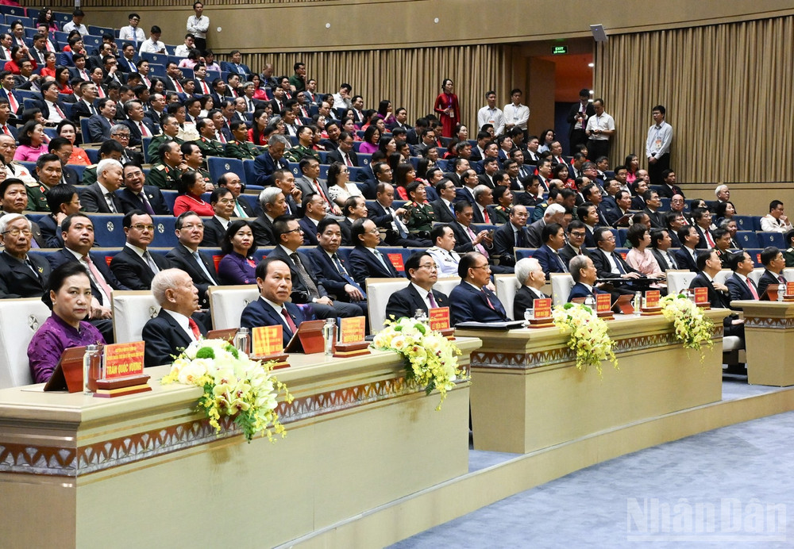

CHÍNH TRỊ
Phát huy vai trò tiên phong, đột phá phát triển Hải Phòng thành trung tâm kinh tế lớn của cả nước
Sáng 27/9, tại thành phố Hải Phòng, đồng chí Phạm Minh Chính, Ủy viên Bộ Chính trị, Bí thư Đảng ủy Chính phủ, Thủ tướng Chính phủ dự và chỉ đạo Đại hội Đại biểu Đảng bộ thành phố Hải Phòng lần thứ I, nhiệm kỳ 2025-2030.
Thứ Bảy, ngày 27/09/2025 - 09:57
Cùng dự có các đồng chí: nguyên Tổng Bí thư Nông Đức Mạnh; nguyên Chủ tịch nước Nguyễn Minh Triết; nguyên Chủ tịch Quốc hội Nguyễn Văn An và Nguyễn Thị Kim Ngân; nguyên Thường trực Ban Bí thư Phan Diễn và Trần Quốc Vượng; các đồng chí Bí thư Trung ương Đảng: Đại tướng Trịnh Văn Quyết, Chủ nhiệm Tổng cục Chính trị Quân đội nhân dân Việt Nam; Lê Hoài Trung, Quyền Bộ trưởng Ngoại giao; các đồng chí Ủy viên Trung ương Đảng: Bùi Thanh Sơn, Phó Thủ tướng Chính phủ; Vũ Hồng Thanh, Phó Chủ tịch Quốc hội; lãnh đạo các ban, bộ, ngành, cơ quan Trung ương.
Thực hiện Chỉ thị số 45-CT/TW, ngày 14/4/2025 của Bộ Chính trị về đại hội đảng bộ các cấp tiến tới Đại hội đại biểu toàn quốc lần thứ XIV của Đảng; Kế hoạch số 379-KH/TU, ngày 17/7/2025 của Ban Chấp hành Đảng bộ thành phố về tổ chức đại hội đảng bộ các cấp, Đại hội đại biểu Đảng bộ thành phố, nhiệm kỳ 2025-2030, tiến tới Đại hội đại biểu toàn quốc lần thứ XIV của Đảng; được sự nhất trí của Bộ Chính trị, Đại hội đại biểu Đảng bộ thành phố Hải Phòng lần thứ I, nhiệm kỳ 2025-2030 được tổ chức từ ngày 26 đến 27/9.